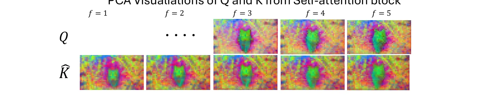
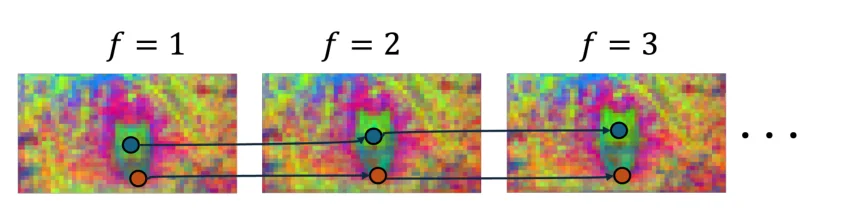
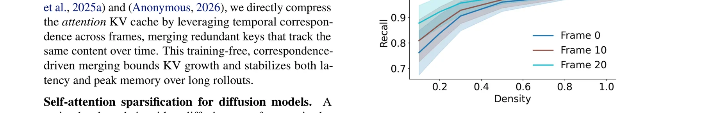
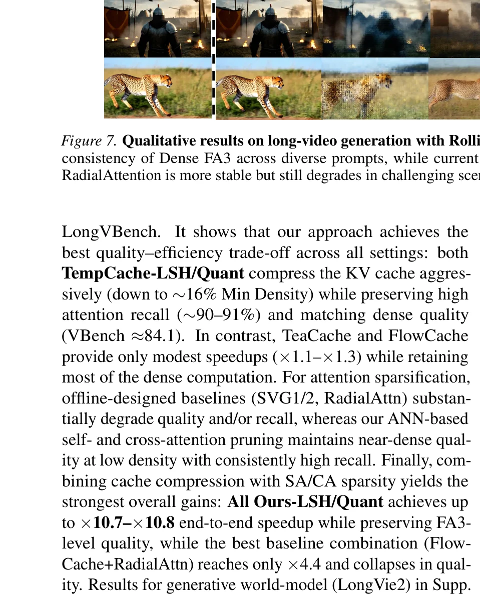
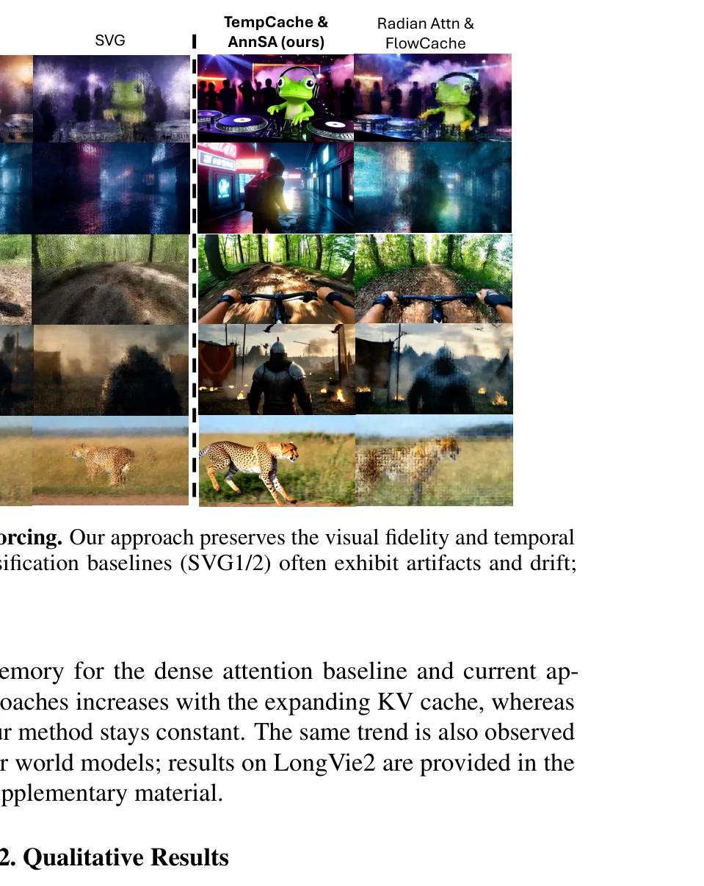
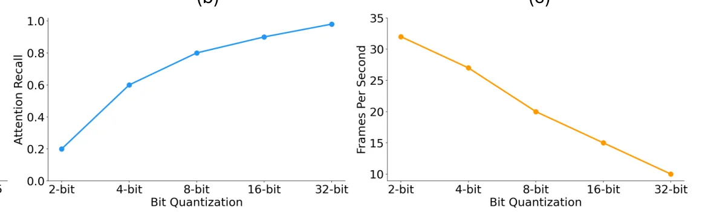
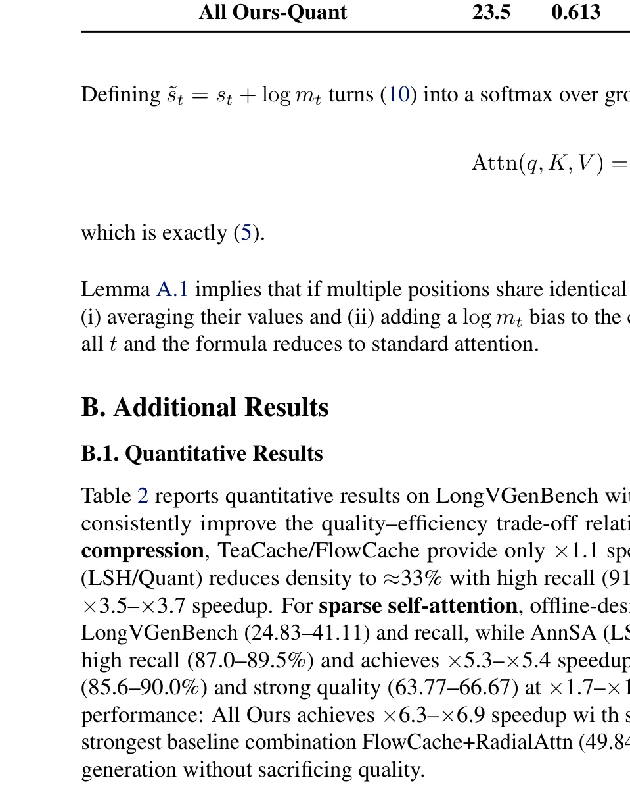
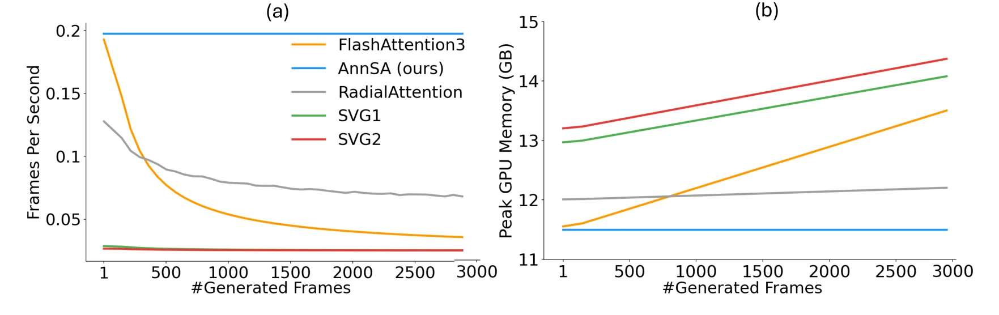
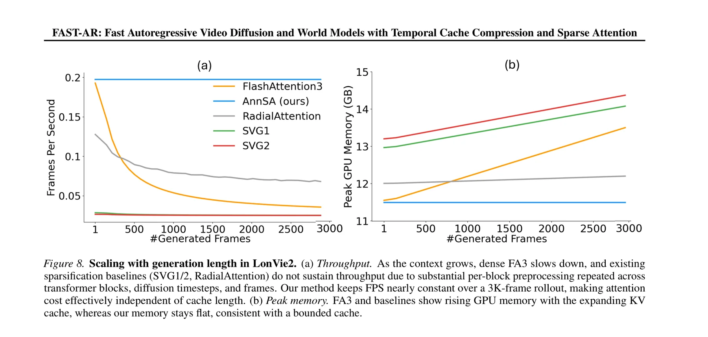

自回归视频扩散的注意力瓶颈
自回归视频扩散模型（如Rolling Forcing、LongVie2）实现了流式帧生成，为长视频合成、视频世界模型和交互式神经游戏引擎打开了大门。然而，这些模型的核心注意力机制存在一个根本性瓶颈：随着生成推进，KV缓存不断增长，推理延迟线性上升，GPU显存持续膨胀，严重限制了可用的时间上下文并损害长程一致性。
两大核心挑战
速度挑战
3D时空注意力的计算量随KV缓存长度线性增长。3000帧视频的累积注意力复杂度可达 $O(T^2)$，帧率从初始的高FPS持续下降。
显存挑战
膨胀的KV缓存产生巨大的内存开销。在单张H100上，Dense FA3生成3000帧后显存持续增长，迫使使用短上下文窗口，损害长程时序一致性。
FAST-AR方案
统一的免训练注意力框架：TempCache + AnnCA + AnnSA，实现5×–10×加速，同时保持恒定峰值显存和近似无损的视觉质量。
LLM的KV缓存问题主要关注单序列内的长上下文，而自回归视频扩散的KV缓存需要跨越数百个去噪步和数千帧的时间维度积累。LLM中的KV压缩技术（如H2O、StreamingLLM）无法直接迁移，因为视频扩散的注意力模式具有独特的时空结构和因果约束。FAST-AR的贡献在于首次针对这一特殊场景设计了系统化的压缩方案。
FAST-AR在单张H100 GPU上生成3000帧（约2分钟视频）时保持恒定FPS和近似恒定显存。这意味着原本需要多GPU集群或反复缩减上下文窗口的长视频生成任务，现在可以在消费级硬件上完成。这对于实时世界模型和交互式游戏引擎的应用落地具有决定性意义。
自回归视频扩散中的三种冗余源
FAST-AR的核心出发点是一个实证观察：自回归视频扩散的注意力机制存在大量可利用的冗余。论文通过对Rolling Forcing生成的100个视频进行系统分析，识别出三种持久的冗余来源。
冗余一：跨帧近重复Key
如Figure 3的PCA可视化所示，许多cached keys在不同帧之间几乎完全重复。同一个语义区域（如前景物体、背景纹理）对应的key特征在连续帧中反复出现。这种重复跨越扩散时间步和几乎所有Transformer层持续存在，表明KV缓存可以被大幅压缩。


冗余二：缓慢演化的语义Query/Key
Q和K特征具有强烈的语义聚类特性——前景token（如猫）聚在一起并关注对应的语义区域，背景token形成独立的聚类。由于Q和K演化缓慢，大量query-key点积计算是冗余的，可以通过近似最近邻匹配快速定位真正相关的key。
冗余三：跨注意力的提示词浪费
自回归视频扩散模型通常使用长且详细的文本提示词（描述物体、动作、事件），但在生成每一帧时，只有少数提示词token真正相关。如Figure 4所示，cross-attention高度选择性：当画面中有猫时，注意力集中在"cat"相关token；当货车遮挡后变为狗时，注意力转向"dog"。

Figure 2的实证分析表明，自回归视频扩散的注意力高度稀疏——仅保留30%的计算即可保存超过85%的注意力质量。这并非偶然，而是由视频数据的内在结构决定的：连续帧之间的语义变化是渐进的，大部分区域的注意力模式在帧间保持稳定。这意味着在理论上，存在至少3倍的加速空间，而FAST-AR通过三管齐下逼近了这一极限。
论文巧妙地利用了DiffTrack的发现——视频DiT中的query-key相似性在特定层和时间步上天然编码了跨帧对应关系。这意味着不需要额外的跟踪模型或运动估计网络，仅通过注意力矩阵本身就能恢复时序对应，为KV缓存压缩提供了零成本的信号来源。这一洞察将一个看似需要额外计算的问题转化为了已有计算的副产品。
FAST-AR：将注意力重构为近似最近邻搜索
FAST-AR的核心思想是将昂贵的全注意力计算重新表述为近似最近邻（ANN）搜索问题。对于每个query，不再与所有cached keys计算点积，而是先用ANN快速检索出一小部分候选key indices $N(q) \subseteq \{1, \ldots, |\hat{K}|\}$，然后仅对这些候选者计算注意力：
两种轻量级ANN策略被考虑：局部敏感哈希（LSH）将query和key投影到共享低维随机子空间，用哈希桶分组使得query只与落入同桶的key比较；量化相似度搜索将query和key量化为低比特表示，在量化空间中直接执行最近邻搜索。两种方法都避免了离线预处理阶段，支持快速推理时匹配。
FAST-AR的关键哲学转变在于接受注意力计算不需要精确匹配。传统注意力对每个query扫描所有key来找到全局最优的top-k，而ANN搜索通过哈希桶或量化码本快速定位"足够近"的候选集。当注意力天然稀疏时（30%密度保存85%质量），精确搜索的额外开销是浪费的。这种从精确到近似的范式转换，在NLP中由Reformer首创，FAST-AR首次将其推广到自回归视频扩散。
FAST-AR使用Facebook的FAISS库进行LSH和量化检索。FAISS经过多年工业验证，支持GPU加速，可以高效处理高维向量的最近邻搜索。选择FAISS而非自定义实现大幅降低了工程复杂度，同时保证了检索性能。这体现了一种务实的工程哲学：站在成熟基础设施的肩膀上，专注于算法创新。
TempCache：时序对应驱动的KV缓存压缩
TempCache是FAST-AR的第一个核心模块，专门解决跨帧近重复Key的冗余。其核心观察是：由于视频内容的连续性，许多cached keys在不同帧中追踪相同的内容，因此可以通过时序对应关系将它们合并。
找到时序对应关系
建立在DiffTrack的发现之上：对于当前帧的query token，其在前一帧中的对应token就是注意力分数最高的key。为避免显式计算 $QK^\top$，TempCache使用ANN机制检索每个query的top-1最近邻key作为对应估计。一旦对应关系建立，跨帧追踪相同语义token的key被分组，每组仅保留最近的代表性key。
Lemma 5.1：无冗余注意力
设 $q \in \mathbb{R}^{d_k}$ 为query，$K = (k_1, \ldots, k_n)^\top$ 和 $V = (v_1, \ldots, v_n)^\top$ 为keys和values。假设索引集被划分为 $g$ 个组 $\{G_t\}_{t=1}^g$，每组内所有key完全相同。则标准注意力精确等于在 $g$ 个组代表上计算的注意力：
$$\text{Attn}(q, K, V) = \sum_{t=1}^{g} \frac{e^{\tilde{s}_t}}{\sum_{u=1}^{g} e^{\tilde{s}_u}} \tilde{v}_t, \quad \tilde{s}_t = s_t + \log m_t$$其中 $s_t = \frac{q^\top k'_t}{\sqrt{d_k}}$，$m_t = |G_t|$，$\tilde{v}_t = \frac{1}{m_t}\sum_{i \in G_t} v_i$。
这个引理的含义极为深远：当key的重复是精确的，合并操作不引入任何近似误差。实践中，由于时序特征只是近似重复，合并使用相似度阈值，产生可控的近似。最坏情况下（未检测到冗余时），方法退化为标准稠密注意力。
Lemma 5.1证明了当key完全重复时，合并操作是精确的——无任何近似误差。这是一个非常强的理论保证：它意味着TempCache的压缩质量直接取决于跨帧key的相似程度。当相似度高时（如静态背景区域），压缩近乎无损；当相似度低时（如快速运动区域），自动退化为保留更多独立key。这种自适应行为无需超参数调整，完全由数据驱动。
TempCache仅修改注意力核的输入（cached K, V），不需要修改注意力核本身。这意味着它可以无缝兼容FlashAttention、FlashInfer等任何高效注意力实现，甚至未来出现的新核。这种设计将"何时压缩"和"如何计算"完全解耦，是模块化工程设计的典范。相比之下，SVG/RadialAttn等方法需要定制的稀疏核，在新硬件或新模型架构上可能需要重新适配。
def tempcache_compress(Q, K_cache, V_cache, threshold=0.85):
# Step 1: ANN检索每个query的top-1最近邻key
# 使用FAISS LSH或量化索引
neighbors = ann_index.search(Q, k=1) # [Nq, 1]
# Step 2: 建立时序对应分组
groups = {}
for q_idx, k_idx in enumerate(neighbors):
# 计算相似度（余弦相似度或点积）
sim = cosine_similarity(Q[q_idx], K_cache[k_idx])
if sim > threshold:
# 归入已有组或创建新组
group_id = find_representative_group(k_idx)
groups.setdefault(group_id, []).append(k_idx)
# Step 3: 压缩 — 每组保留一个代表key
K_new, V_new, biases = [], [], []
for gid, members in groups.items():
rep_key = K_cache[members[-1]] # 最近的代表性key
mean_val = V_cache[members].mean(dim=0) # 组均值
log_bias = torch.log(torch.tensor(len(members)))
K_new.append(rep_key)
V_new.append(mean_val)
biases.append(log_bias)
# Step 4: 返回压缩后的KV缓存
return stack(K_new), stack(V_new), stack(biases)合并重复key时，每组的multiplicity $m_t$ 需要在logit空间加偏移 $\log m_t$。这确保了softmax归一化后的权重分配与原始稠密注意力一致。这个看似微小的细节是保证合并无损的关键——遗漏它会导致组内被低估，系统性地改变注意力分布。
AnnCA：近似最近邻交叉注意力
自回归视频扩散模型通常依赖长且详细的文本提示词来描述物体、动作和事件。在每一层和每个生成时间步，cross-attention要求每个latent query attend to 所有prompt tokens。然而，如Figure 4所示，cross-attention高度选择性——对于当前帧，只有少数prompt token真正相关。
AnnCA的工作机制
AnnCA利用ANN搜索高效地识别相关prompt tokens。具体来说：
（1）将当前帧的latent queries和prompt keys投影到共享的LSH或量化嵌入空间；（2）对于每个prompt token，检查其桶中是否有任何当前帧的latent query；（3）不与任何当前帧query共享桶的prompt tokens被视为无关，从该帧的cross-attention计算中排除。
为什么ANN匹配优于全注意力
在视频生成中，不同帧关注的语义内容截然不同。当画面是猫时，"cat"相关token获得高注意力；当画面变成狗时，"dog"相关token才是关键。这种帧级语义切换使得每帧仅需少量prompt tokens。ANN匹配通过哈希桶快速过滤掉无关tokens，将cross-attention的计算量从 $O(N_q \times N_p)$ 降低到 $O(N_q \times N_{selected})$，其中 $N_{selected} \ll N_p$。
Dense Cross-Attn
每个query与所有prompt token计算注意力，包括大量无关token。随着prompt变长，计算量线性增长。
基于规则的筛选
使用固定关键词匹配或TF-IDF等启发式方法，但无法捕捉深层语义关联，且需要人工定义规则。
AnnCA (Ours)
基于ANN的帧级prompt token动态选择，无需训练、无需规则，通过嵌入空间相似性自动筛选相关tokens。
Figure 4展示了一个精妙的现象：当视频中猫被货车遮挡并转变为狗时，cross-attention的焦点从"cat"平滑过渡到"van"再转移到"dog"。这说明cross-attention不仅仅是一个技术组件，它实际上充当了视频内容的语义调度器——根据当前帧的内容动态分配文本语义资源。AnnCA通过ANN匹配近似了这种调度，将稀疏性从观察到的现象转化为了可利用的计算优势。
一个精巧的设计细节是：AnnCA在筛选prompt tokens时建立的LSH/量化分桶信息，可以被AnnSA直接复用于自注意力稀疏化。这意味着ANN匹配的计算成本被两个模块摊销，进一步降低了总体开销。这种跨模块的信息共享体现了FAST-AR作为统一框架的设计哲学。
class AnnCA:
"""Approximate Nearest-Neighbor Cross-Attention"""
def __init__(self, d_model, n_buckets=64, method="lsh"):
if method == "lsh":
# LSH: 随机投影 + 哈希桶
self.projection = random_orthogonal(d_model, n_buckets)
self.index = faiss.IndexLSH(d_model, n_buckets)
else:
# 量化: 乘积量化(PQ) 8-bit
self.index = faiss.IndexPQ(d_model, 8, 8)
def prune_prompt_tokens(self, latent_queries, prompt_keys):
"""
对当前帧，筛选相关的prompt tokens
latent_queries: [Nq, d] - 当前帧的latent query
prompt_keys: [Np, d] - prompt的key投影
"""
# 1. 将latent queries加入索引
self.index.train(latent_queries)
self.index.add(latent_queries)
# 2. 用prompt keys查询，看哪些落入同桶
_, bucket_ids = self.index.search(prompt_keys, k=1)
# 3. 标记有neighbor的prompt tokens为相关
relevant_mask = torch.zeros(prompt_keys.shape[0], dtype=bool)
for p_idx, bucket in enumerate(bucket_ids):
if has_neighbor_in_bucket(bucket, latent_queries):
relevant_mask[p_idx] = True
# 4. 返回筛选后的prompt keys/values indices
return torch.where(relevant_mask)[0]AnnSA：近似最近邻稀疏自注意力
自注意力在视频扩散模型中具有最强的计算负担：3D时空token的全自注意力复杂度为 $O(N^2)$，其中 $N = H \times W \times T$。AnnSA利用Q和K的语义聚类特性，通过ANN匹配将自注意力限制在语义相关的key子集内。
语义桶复用
AnnSA的一个精巧设计是复用cross-attention阶段建立的语义分桶。在AnnCA中，latent queries被投影到LSH/量化空间并分配到桶中，这些桶天然反映了prompt诱导的语义分组。AnnSA将同样的分桶信息用于自注意力：每个token的query被分配到一个或多个桶，自注意力被限制在同一桶内的key之间，通过块稀疏注意力核（如FlashInfer）高效计算。
语义一致性的理论基础
Figure 3的PCA可视化揭示了Q和K的强语义聚类结构：前景token（如猫）聚在一起，背景token形成独立聚类。这意味着基于哈希桶的分组天然对应了语义区域——同一桶中的token大概率属于同一物体或区域，它们之间的注意力才是有意义的。跨桶的注意力（如前景token attend to 深层背景）通常是冗余的。


SVG、SVG2和RadialAttention是为离线视频扩散设计的稀疏注意力方法，但在自回归设置中表现严重退化。根本原因是：离线方法需要对每帧的每个block进行昂贵的预处理（如聚类或能量衰减估计），而这些预处理必须在Transformer blocks、扩散时间步和帧之间重复。在长序列自回归生成中，这种重复预处理的累积开销抵消甚至超过了稀疏化带来的收益。FAST-AR的ANN匹配是轻量级且可复用的，成功避免了这一陷阱。
Q和K的语义聚类不是人为设计，而是视频数据的内在结构。在自然视频中，物体在连续帧中保持语义一致性（猫仍然是猫，背景仍然是背景），这自然导致了特征空间中的聚类结构。AnnSA通过ANN桶化利用了这一结构，本质上是在做一种"免费"的语义分割——不需要额外的分割网络，仅通过哈希投影就能近似恢复语义区域边界。
AnnSA产生的桶化稀疏模式完美匹配FlashInfer的块稀疏注意力核。每个桶对应一个连续的token块，块内执行标准稠密注意力，块间跳过。FlashInfer针对这种块稀疏模式做了深度优化（融合内存访问、减少kernel launch开销），使得AnnSA的稀疏注意力计算几乎与理论最优的稀疏模式一样高效。
全面实验：5×–10× 加速与近乎无损的质量
FAST-AR在两个SOTA模型上进行了全面评估：Rolling Forcing（长时序自回归视频扩散）和LongVie2（自回归世界模型）。所有实验在单张H100 GPU上运行，生成3000帧（约2分钟视频），不施加上下文窗口限制。
定量结果
| 方法 | PSNR↑ | SSIM↑ | LPIPS↓ | VBench↑ | 密度↓ | 召回↑ | 加速↑ |
|---|---|---|---|---|---|---|---|
| Dense FA3 | — | — | — | 84.08 | 100% | 100% | 1.0× |
| TeaCache | 16.12 | 0.315 | 0.523 | 84.11 | 93.2% | 84.6% | 1.1× |
| FlowCache | 22.15 | 0.634 | 0.222 | 84.15 | 82.9% | 86.9% | 2.3× |
| TempCache-Quant | 24.26 | 0.653 | 0.143 | 84.19 | 16.2% | 91.4% | 3.2× |
| SVG1 | 14.22 | 0.201 | 0.744 | 33.15 | 76.1% | 30.2% | 0.1× |
| SVG2 | 14.29 | 0.226 | 0.736 | 34.66 | 68.8% | 38.9% | 0.2× |
| RadialAttn | 16.87 | 0.289 | 0.702 | 61.51 | 81.6% | 58.3% | 2.8× |
| AnnSA-Quant | 25.77 | 0.689 | 0.141 | 83.29 | 28.0% | 92.6% | 2.8× |
| AnnCA-LSH | 25.68 | 0.679 | 0.155 | 83.23 | 33.1% | 94.2% | 1.2× |
| FlowCache+RadialAttn | 16.98 | 0.294 | 0.687 | 45.15 | — | — | 4.4× |
| All Ours-Quant | 25.73 | 0.678 | 0.147 | 83.99 | — | — | 10.8× |
关键发现：FAST-AR的完整组合（All Ours-Quant）实现了10.8× 端到端加速，同时VBench分数（83.99）仅比Dense FA3（84.08）低0.09分。相比之下，最佳基线组合（FlowCache+RadialAttn）仅达到4.4×加速，且VBench暴跌至45.15。
SVG1/2在自回归设置中产生严重的质量崩塌（VBench从84降至33-34），加速也变成减速（0.1×-0.2×）。RadialAttn表现稍好但仍远逊于FAST-AR。根本原因不在于方法本身有缺陷，而在于它们的设计假设与自回归场景不匹配：离线方法假设全局token序列已知且固定，而自回归生成中序列逐帧扩展，且缓存中的历史帧不可重新排列。FAST-AR的ANN方法不依赖全局信息，天然适应增量生成。
Figure 6展示了FAST-AR最令人印象深刻的特性：在3000帧的完整生成过程中，FPS和峰值显存几乎保持恒定。这意味着用户可以预测生成时间——无论生成500帧还是3000帧，每帧的处理时间基本相同。对于实时世界模型和交互式游戏引擎，这种可预测性与绝对速度同等重要，因为它保证了流畅的用户体验。
消融分析与组件贡献
论文对FAST-AR的三个组件进行了系统消融，验证每个模块的独立贡献和协同效应。
组件独立贡献
从Table 1可以提取各组件的独立贡献：
- TempCache-Quant：KV缓存压缩至16.2%密度，91.4%召回率，3.2×加速
- AnnSA-Quant：自注意力稀疏化至28%密度，92.6%召回率，2.8×加速
- AnnCA-LSH：交叉注意力稀疏化至33.1%密度，94.2%召回率，1.2×加速

LSH vs 量化
两种ANN策略（LSH和量化）的表现非常接近，各有微弱优势。TempCache-Quant略优于LSH（91.4% vs 90.2%召回率），AnnSA-Quant也略优于LSH（92.6% vs 92.4%）。这说明FAST-AR的核心思想不依赖于特定的ANN实现，而在于ANN框架本身。在实践中，量化方法在高维空间中可能有微弱优势，因为PQ编码保留了更多的子空间结构信息。



三个组件的贡献呈非对称结构：TempCache提供最大的单组件加速（3.2×），因为它直接压缩了KV缓存的大小，影响所有后续的注意力计算；AnnSA提供次大的加速（2.8×），因为自注意力是计算最密集的部分；AnnCA提供较小但显著的加速（1.2×），因为cross-attention在总计算中的比例较小。然而，三者组合时加速并非简单相加（3.2+2.8+1.2=7.2），而是达到10.8×，说明存在协同效应——TempCache的KV压缩使得AnnSA和AnnCA的操作空间更小，进一步提升了它们的效率。
FAST-AR不需要任何模型修改、重训练或微调。它直接作用于预训练模型的推理过程，修改的仅是注意力的输入（缓存的K, V）而非模型权重。这意味着它可以无缝应用于任何现有的自回归视频扩散模型——从Rolling Forcing到LongVie2到未来的模型——只需替换注意力计算的wrapper即可。这种即插即用性大幅降低了技术采用的门槛。
import torch
from faiss import IndexLSH, IndexPQ
from flashinfer import sparse_attention
class FASTAttentionWrapper:
"""FAST-AR: 替换标准attention的即插即用wrapper"""
def __init__(self, original_attn, config):
self.original = original_attn
self.tempcache = TempCache(
threshold=config.sim_threshold,
method=config.ann_method # "lsh" or "quant"
)
self.ann_ca = AnnCA(config.d_model, config.n_buckets)
self.ann_sa = AnnSA(config.d_model, config.n_buckets)
self.frame_idx = 0
def forward(self, q, k, v, is_cross_attn=False):
# 1. TempCache: 压缩KV缓存
k, v, bias = self.tempcache.compress(q, k, v)
if is_cross_attn:
# 2a. AnnCA: 筛选相关prompt tokens
keep_idx = self.ann_ca.prune(q, k)
k, v = k[keep_idx], v[keep_idx]
# 标准注意力（已减少key数量）
out = self.original(q, k, v)
else:
# 2b. AnnSA: 桶化稀疏自注意力
buckets = self.ann_sa.assign_buckets(q, k)
out = sparse_attention(
q, k, v, buckets, bias
)
self.frame_idx += 1
return out
# 使用方式：替换DiT中的attention
model.attn = FASTAttentionWrapper(
model.attn,
FASTConfig(ann_method="quant", n_buckets=64)
)
# 正常推理即可，无需任何训练
video = model.generate(prompt, num_frames=3000)实验中发现，稀疏注意力在前30%的去噪步中应被禁用。原因是扩散模型在早期去噪步中构建全局结构，此时注意力模式尚未稳定，稀疏化可能破坏全局一致性。在后期去噪步中，注意力模式已稳定且高度稀疏，是应用稀疏化的理想时机。这种时间自适应策略体现了对扩散推理动态过程的深刻理解。
FAST-AR 的核心贡献与未来展望
核心贡献
FAST-AR提出了一个统一、免训练的注意力加速框架，针对自回归视频扩散模型中的三种注意力冗余源——跨帧重复Key、缓慢演化的语义Q/K、浪费的Cross-Attention——分别设计了TempCache、AnnSA和AnnCA三个互补模块。三个模块均基于近似最近邻搜索，使用FAISS的LSH或量化索引实现轻量级推理时匹配，兼容FlashInfer的块稀疏注意力核。
FAST-AR首次将ANN搜索范式系统化地应用于自回归视频扩散。这一范式转换的深远意义在于：它将"注意力计算"从一个O(N^2)的密集矩阵乘法问题重新定义为O(N log N)的近似检索问题。随着FAISS等ANN库的持续优化和硬件加速（如GPU上的HNSW），这种范式的效率优势将进一步放大。未来的工作可以探索更高级的ANN索引结构（如基于图的HNSW）在视频扩散中的应用。
FAST-AR虽然在视频扩散上验证，但其核心思想——利用时序对应压缩缓存、利用语义聚类稀疏注意力——适用于任何具有渐进式缓存增长的自回归生成模型。音频流生成、长文档自回归翻译、连续决策的world model都面临类似的KV缓存膨胀问题。FAST-AR提供了一个通用的、免训练的加速范式，可以推广到这些领域。
五个开放科研问题
ANN精度与生成质量的Pareto前沿
理论分析：FAST-AR使用LSH/8-bit量化作为ANN策略，精度与速度之间存在trade-off。更精确的ANN（如HNSW、IVF-PQ）可能进一步提升注意力召回率，但引入更大的索引构建开销。
调查方向：系统探索不同ANN索引结构（LSH、PQ、HNSW、IVF）在视频扩散注意力中的Pareto前沿；研究自适应精度分配——在不同层/时间步使用不同精度的ANN；探索学习型哈希函数替代随机投影的效果。
训练感知的稀疏注意力架构
理论分析：FAST-AR是完全免训练的，在预训练模型上直接应用。但如果在训练阶段就引入稀疏注意力的归纳偏置，模型可能学会更高效地利用稀疏模式，从而在推理时实现更大的加速。
调查方向：设计训练时的稀疏注意力正则化，鼓励模型学习稀疏友好的Q/K分布；研究混合训练策略——前期稠密训练建立基础能力，后期逐步引入稀疏约束；探索是否可以通过微调（而非全量训练）让现有模型适应FAST-AR的稀疏模式。
跨模态注意力压缩的统一理论
理论分析：FAST-AR分别处理了self-attention和cross-attention的稀疏化，但两者共享ANN框架。一个自然的问题是：是否存在一个统一的理论框架，将Q-K相似性的时空结构与注意力稀疏性联系起来？
调查方向：建立Q/K特征的低维流形结构与注意力稀疏性之间的理论联系；研究信息论视角下的最优压缩率——给定视频的时空冗余，理论上KV缓存能压缩到什么程度；探索是否存在与视频内容复杂度自适应的压缩策略。
实时交互式世界模型的注意力架构
理论分析：FAST-AR使得3000帧（2分钟）视频在单GPU上以恒定FPS生成。但对于交互式世界模型（如游戏引擎），需要亚帧级延迟和对用户输入的即时响应。当前架构是否已满足这一需求？
调查方向：测量FAST-AR在不同延迟约束下的可行帧率范围；设计预测性KV缓存预取策略——提前预测用户可能的输入方向并预压缩相关区域的缓存；探索FAST-AR与模型蒸馏的结合——先用FAST-AR压缩注意力，再蒸馏到更小的模型中。
注意力稀疏性的自适应动态调度
理论分析：FAST-AR在实验中发现稀疏注意力应在前30%去噪步禁用。这暗示扩散推理的不同阶段具有不同的注意力稀疏特征。一个更精细的动态调度策略可能进一步提升效率。
调查方向：研究注意力稀疏度随去噪步的动态变化规律，设计基于稀疏度的自适应调度器；探索注意力密度预测模型——用轻量级网络预测下一层/时间步的最优稀疏度；研究不同内容区域（静态背景 vs 快速运动前景）是否需要不同的稀疏策略。